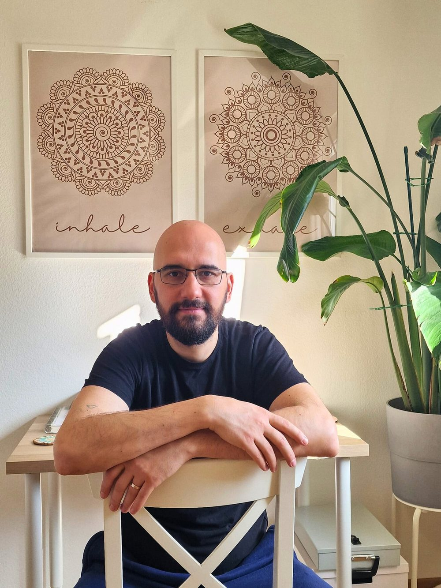
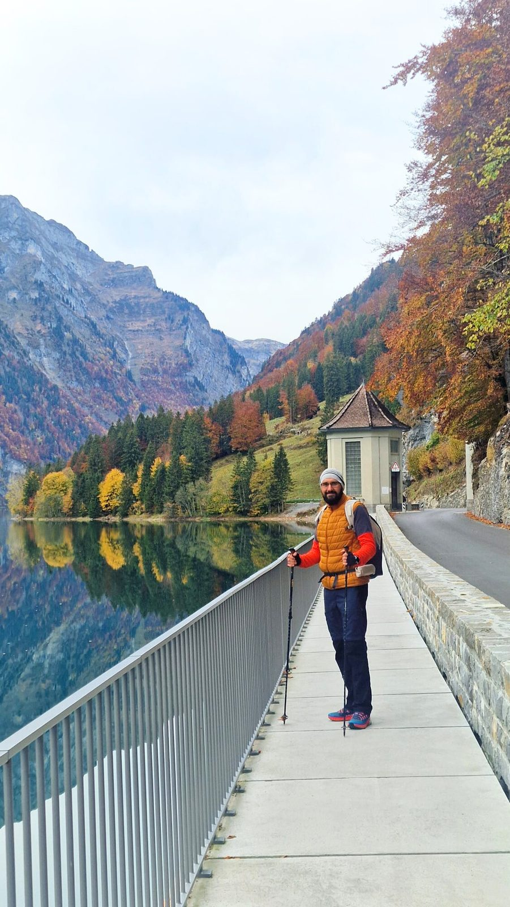
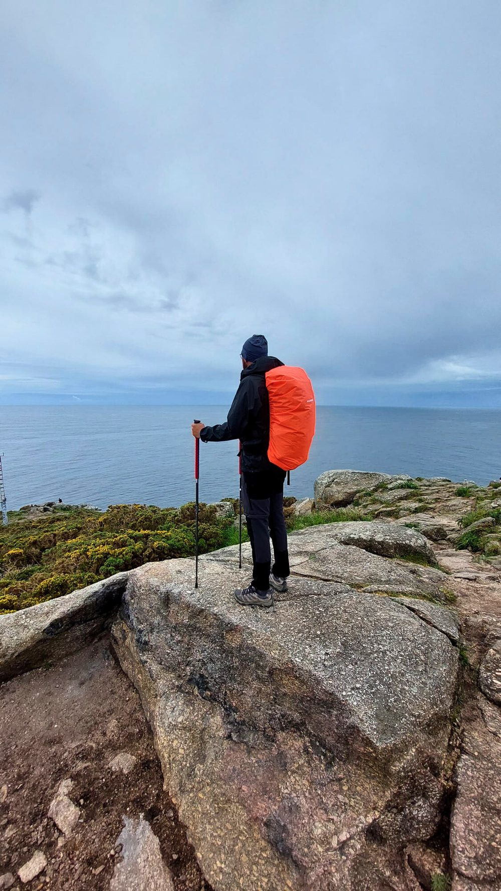

Despre
Despre Flavius

Azi țin spații în care descoperirea, eliberarea și devenirea se pot petrece blând
Prezența, liniștea și susținerea energetică subtilă ghidează munca — nu repararea, forțarea sau oferirea de răspunsuri.
Ceea ce contează cel mai mult este spațiul pe care îl creăm împreună, în care inteligența ta proprie se poate desfășura firesc.

N-am ajuns aici pe un drum drept sau ușor
Acum câțiva ani am ajuns într-un punct în care viața mi se părea de nesuportat. Eram profund epuizat, deconectat și mă întrebam dacă mai merită să continui.
În punctul acela, cel mai de jos, am început să-mi notez întrebările pe care nu le mai puteam evita — despre sens, despre identitate și despre ce înseamnă, cu adevărat, să trăiești.
Momentul acela nu a dus la răspunsuri. A dus la ascultare.
Când viața mi-a cerut să ascult
- Am intrat în terapie și am rămas în ea mai bine de doi ani.
- Am descoperit meditația într-un centru budist și am învățat să stau cu ceea ce e prezent, în loc să fug.
- Am mers pe Camino, mi-am încetinit pasul și am lăsat tăcerea să mă remodeleze.
- Vipassana mi-a adâncit relația cu conștientizarea și cu sinceritatea.
- Pe drum am explorat constelații familiale, lucru șamanic, ceremonii cu ayahuasca și alte feluri de a întâlni ceea ce trăiește sub suprafață.

Acum doi ani, Reiki mi-a intrat în viață…
… nu ca o soluție, ci ca o confirmare.
Prin Reiki am simțit cât de multă transformare se petrece pur și simplu atunci când există un spațiu sigur și acordat.
Mi-am terminat certificarea de nivel doi și am început să practic — nu ca să vindec pe alții, ci ca să țin un câmp în care vindecarea se poate desfășura firesc.

Prezența vine prima
Munca pe care o ofer se sprijină pe spațiul pe care îl creăm împreună.
Instrumentele — meditația, lucrul cu părțile, Reiki sau alte forme de explorare — sunt suporturi, nu soluții. Ele slujesc procesul, nu invers.
Rolul meu nu e să te ghidez spre răspunsuri sau să repar ce pare stricat. Este să te însoțesc, în liniște, cu statornicie și respect, în timp ce descoperi ceea ce e deja adevărat pentru tine.
Dacă ești aici, probabil ești deja pe drum. Eu doar merg alături de tine o parte din cale.
Nu trebuie să fii pregătit. Nu trebuie să știi ce cauți.
Dacă ceva în tine e atras de liniște, sinceritate și descoperire blândă, ești binevenit aici.
Acesta este The Becoming Field
Explorează Soul Recharge